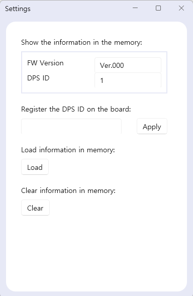

UI
Description

DPS 보드는 다양한 기능을 제공하는 소프트웨어입니다. 이 소프트웨어는 다음과 같은 기능을 제공합니다:
연결 : DPS 보드와 연결하여 제어할 수 있습니다.
로그 확인 : 사용자가 로그를 확인하고 문제를 추적할 수 있습니다.
제어(Control) : DPS 보드를 제어하고 설정할 수 있습니다.
교정(Calibration) : 보드를 더욱 정확하게 사용하기 위한 교정 기능을 제공합니다. 그 결과를 그래프 형태로 확인할 수 있습니다.
Connect
Connect 화면에서는 USB로 연결된 DPS 보드 를 개별적으로 연결할 수 있습니다:
사용자는 지정된 포트(Port) 를 설정하여 각 DPS 보드의 전원 On/Off 제어 를 할 수 있습니다.
이를 통해 보드 제어 가 이루어집니다.
Control Voltage
Current Voltage 화면에서는 각 채널에 대해 전압(Voltage) 을 확인할 수 있습니다:
DPS 보드의 전압 상태 를 실시간으로 모니터링할 수 있습니다.
Control Voltage 기능을 통해 각 채널에 대해 개별적으로 전압(Voltage) 을 설정할 수 있습니다:
사용자는 현재 설정된 전압 과 전류(Current) 를 실시간으로 측정하고 확인할 수 있습니다.
교정(Calibration) 을 진행한 후, 각 DPS 보드 에 개별적으로 적용할 수 있습니다.
Calibration
Calibration 과정을 통해 DPS 보드 를 더욱 정확하게 사용할 수 있습니다:
개별적인 제어(Control) 가 가능하며, 결과를 차트 형태로 확인할 수 있습니다.
DPS 보드 의 성능을 최적화하는 중요한 기능입니다.
Log
Log 화면에서는 측정된 전압 및 전류 값과 소프트웨어 사용 중 발생한 에러를 확인할 수 있습니다.
사용자는 측정된 전압 및 전류 값을 실시간으로 확인할 수 있습니다.
발생한 에러 메시지를 통해 문제의 원인을 빠르게 파악하고, 신속하게 대응할 수 있습니다.
Setting

Setting 화면에서는 다음과 같은 기능을 제공합니다:
펌웨어(FW) 버전 과 보드 ID 를 확인할 수 있습니다.
사용자는 DPS ID 를 설정하고, 저장된 보드 정보 를 불러오거나 저장할 수 있습니다.
이 기능을 통해 DPS 보드 관리 가 편리하게 이루어집니다.